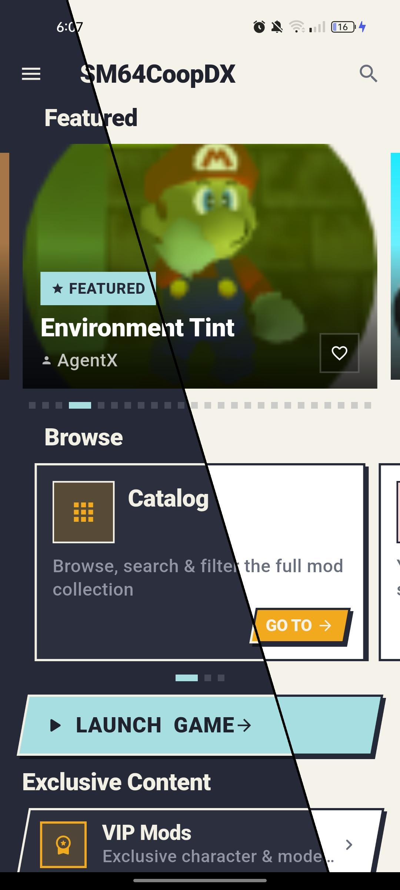

SM64CDPY MODS
COOPDX64
Descarga y administra mods de SM64CoopDX sin salir del juego. Explora el catálogo, instala lo que quieras y vuelve a jugar en segundos.
- Versión v1.6.2
- Tamaño ~22 MB
- Requiere Android 7.0+
- Actualizado 28 jul 2026
Disponible en arm64 (recomendado, 2018+), arm32 y x86_64 — elige tu build en la página del release.

QUÉ HACE
機能Catálogo completo
Explora más de 1,000 mods de personajes, modos de juego y ROM hacks, con búsqueda y filtros.
Sin salir del juego
Descarga e instala mods directo desde la app, sin cambiar de pantalla ni tocar archivos a mano.
Favoritos y perfiles
Guarda tus mods favoritos y expórtalos o impórtalos cuando quieras respaldarlos.
Ficha de cada mod
Versión, descargas, tags y descripción de cada mod antes de instalarlo.
100% open source
Código y releases públicos en GitHub, mantenidos en abierto por la comunidad.
Multilenguaje
Disponible en español, inglés y portugués (Brasil), con selector de idioma en ajustes.
ASÍ SE VE
画面NOVEDADES
更新- Se corrigió la instalación de mods cuyo nombre de archivo tenía caracteres especiales (espacios, corchetes, emojis) — antes fallaba en silencio.
- Los errores de descarga ahora muestran el mensaje real (con botón de copiar) en vez de un genérico "Error al instalar".
- Enlaces de descarga rotos en la base de datos de mods se corrigen automáticamente al cargarlos.
PREGUNTAS FRECUENTES
質問¿Qué es Sm64cdpy?
Sm64cdpy es un mod manager para Android que te permite explorar, descargar e instalar mods de SM64CoopDX sin salir del juego.
¿Sm64cdpy es gratis?
Sí. Sm64cdpy es gratuito y de código abierto, publicado en GitHub bajo licencia libre.
¿Necesito tener SM64CoopDX ya instalado?
Sí, Sm64cdpy administra mods para SM64CoopDX; no incluye ni distribuye el juego base.
¿Es seguro instalar mods con Sm64cdpy?
El código de la app es público en GitHub y cualquiera puede revisarlo. Si una instalación falla, la app muestra el error real (no un mensaje genérico) para que puedas reportarlo o resolverlo.